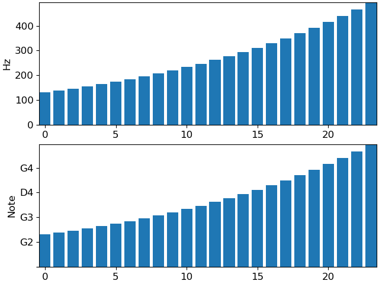

Caution
You're reading an old version of this documentation. If you want up-to-date information, please have a look at 0.9.1.
librosa.display.NoteFormatter¶
- class librosa.display.NoteFormatter(octave=True, major=True, key='C:maj')[source]¶
Ticker formatter for Notes
- Parameters
- octavebool
If
True, display the octave number along with the note name.Otherwise, only show the note name (and cent deviation)
- majorbool
If
True, ticks are always labeled.If
False, ticks are only labeled if the span is less than 2 octaves
Examples
>>> import matplotlib.pyplot as plt >>> values = librosa.midi_to_hz(np.arange(48, 72)) >>> fig, ax = plt.subplots(nrows=2) >>> ax[0].bar(np.arange(len(values)), values) >>> ax[0].set(ylabel='Hz') >>> ax[1].bar(np.arange(len(values)), values) >>> ax[1].yaxis.set_major_formatter(librosa.display.NoteFormatter()) >>> ax[1].set(ylabel='Note')
 Methods
__init__([octave, major, key])create_dummy_axis(**kwargs)fix_minus(s)Some classes may want to replace a hyphen for minus with the proper unicode symbol (U+2212) for typographical correctness. This is a helper method to perform such a replacement when it is enabled via :rc:`axes.unicode_minus`.
format_data(value)Return the full string representation of the value with the position unspecified.
format_data_short(value)Return a short string version of the tick value.
format_ticks(values)Return the tick labels for all the ticks at once.
get_offset()set_axis(axis)set_bounds(vmin, vmax)set_data_interval(vmin, vmax)set_locs(locs)Set the locations of the ticks.
set_view_interval(vmin, vmax)Attributes
axislocs